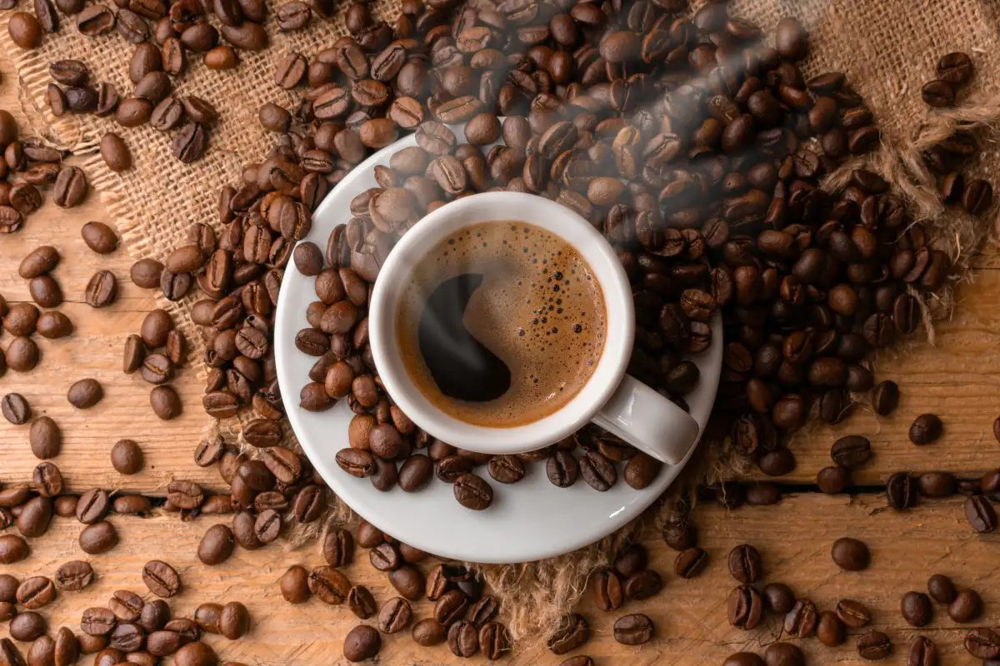
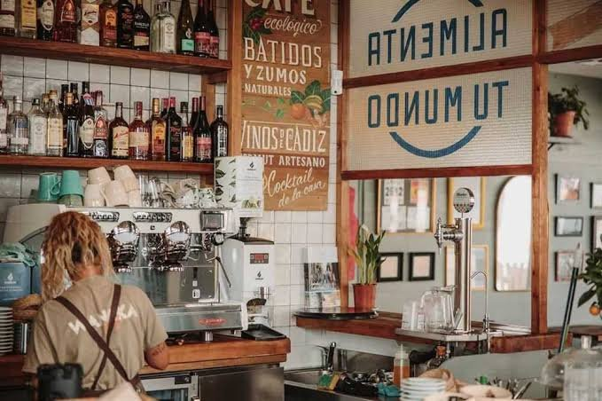
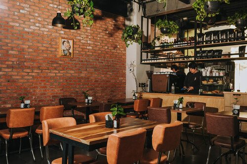
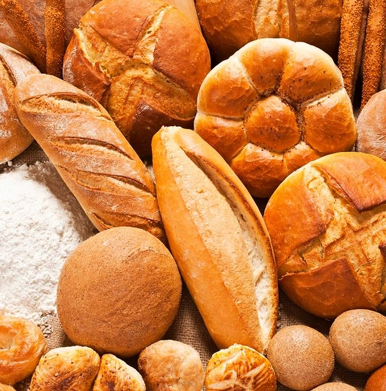
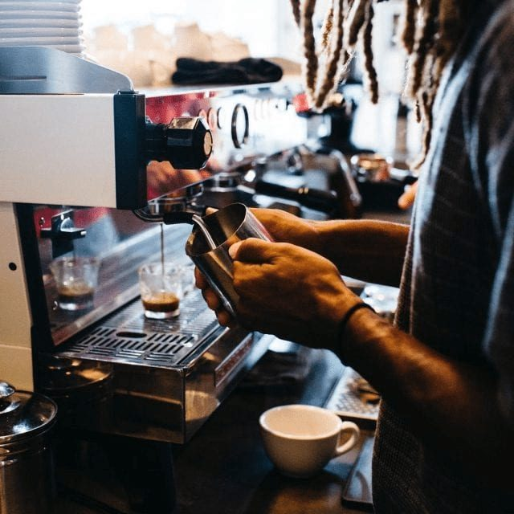

Café de origen
Trabajamos con productores locales para ofrecer granos frescos y de calidad.
En Café Aroma seleccionamos granos de origen costarricense, los tostamos en pequeños lotes y los servimos en un espacio pensado para conversar, trabajar o simplemente hacer una pausa.


Café Aroma nació de un sueño familiar: acercar el mejor café costarricense a las personas que encuentran en una taza caliente el momento perfecto para pensar, crear o descansar.
Trabajamos con pequeños productores de Tarrazú y Los Santos. Podés conocer más sobre el café nacional en el sitio del Instituto del Café de Costa Rica (ICAFÉ).

Trabajamos con productores locales para ofrecer granos frescos y de calidad.

Nuestro equipo prepara cada bebida a mano y cuida cada detalle.

Horneamos todos los días panes y postres frescos para acompañar el café.


Método clásico que resalta el cuerpo y el aroma del café.

Horneado en casa con trozos de chocolate.

Bolsas de café en grano listas para disfrutar en casa.